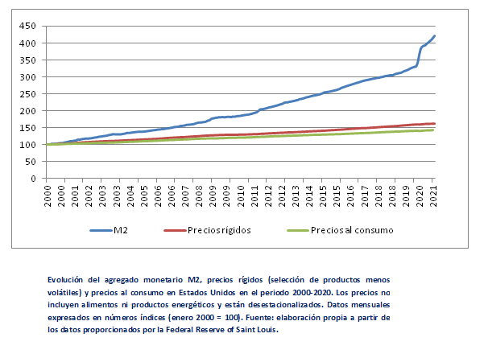
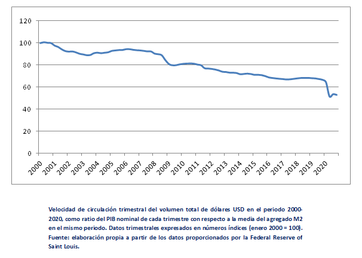

Los índices de precios en todo el mundo parecen registrar un repunte en los primeros meses de 2021. Después de un año marcado por las caídas de precios y con los tipos de interés en mínimos, la atención de los mercados se centra ahora en una hipotética vuelta de la inflación.
Lo primero que debemos tener en cuenta es que hay que diferenciar entre aumentos eventuales de precios en sectores concretos y la inflación en general, como fenómeno monetario. En el primer caso, se trata de movimientos a corto plazo de precios de determinados bienes o servicios, motivados por cambios temporales en los patrones de demanda o en las condiciones de producción. En numerosas ocasiones estos cambios pueden ser reversibles a medio plazo, aunque ello depende otros factores como la competencia o la elasticidad.
Pensemos, por ejemplo, en el aumento del precio del material sanitario durante los primeros meses de la pandemia. En este caso, coincidieron en el tiempo la extensión del virus por todo el mundo y el cierre parcial de la industria china. Esta combinación de menor oferta y mayor demanda se tradujo en una escasez relativa que las economías de mercado reflejan con precios más elevados. Sin embargo, este encarecimiento del material sanitario en muchos países fue acompañado de bajadas de precios en bienes y servicios de consumo social (viajes, hostelería, etc.). En esos casos no ha existido un fenómeno inflacionario propiamente dicho, sino simplemente una transferencia de consumo de unos sectores a otros que se ha reflejado en los precios.
Por el contrario, la inflación, como fenómeno monetario, consiste en la pérdida continuada del poder adquisitivo de una moneda. Dado que la escasez relativa de todos los bienes y servicios de la economía se expresa en relación a esa moneda a través de los precios, la percepción es que éstos suben, aunque no hayan cambiado las condiciones de producción. Por tanto, un aumento de la cantidad de dinero en circulación puede hacer subir los precios si la producción no la acompaña con un crecimiento equivalente. Lo mismo podemos decir de una economía donde la masa monetaria se mantenga estable, pero la oferta se vaya reduciendo.
Cabe destacar que los efectos inflacionarios de la emisión monetaria no siempre son predecibles. En un entorno de incertidumbre, por ejemplo, puede aumentar la demanda de dinero y caer su velocidad de circulación, porque los agentes económicos tienen una mayor preferencia por la liquidez. En otras palabras, aumentaría el atesoramiento de dinero como activo refugio. Una situación que hemos vivido a lo largo de esta crisis, y especialmente al inicio. En este contexto la cantidad de dinero que realmente circula en la economía tendería a caer, por lo cual una expansión monetaria podría intentar compensarla para mantener los precios estables. De esta manera, el objetivo puede no ser generar inflación, sino solamente evitar la deflación. Por otra parte, en economías con mercados financieros muy desarrollados y bajo ciertas condiciones, una expansión monetaria puede tardar meses e incluso años hasta traducirse en inflación. En la eurozona, por ejemplo, en el periodo 2011-2019 el agregado M2 ha crecido a una media del 4,65% anual mientras la tasa de inflación apenas se ha acercado al 2%.
Como podemos observar en la gráfica que se muestra a continuación, esta tendencia parece confirmarse también en Estados Unidos. La evidencia demuestra que en todo el siglo XXI la cantidad de dinero ha crecido un ritmo muy superior a los precios. Cabe destacar que esta conclusión es válida tanto para el índice general de precios al consumo, como para los precios de bienes menos volátiles
Por lo tanto, parece imposible afirmar la existencia de una relación causal directa entre los precios y la masa monetaria. En otras palabras, no parece haber una regla matemática infalible que nos permita predecir la inflación resultante para una cantidad de dinero determinada. Sin embargo, esta negativa no invalida el carácter monetario de la inflación. ¿Cómo podemos explicar entonces que la inflación sea un fenómeno monetario, pero a la vez el dinero pueda crecer mucho más rápidamente que los precios? La explicación es muy sencilla: la ecuación está incompleta.
Anteriormente comentábamos el papel del agregado M2 (es decir, la oferta monetaria), pero hasta ahora no hemos tenido en cuenta la demanda. Recordemos que el dinero está sujeto a las mismas reglas de oferta y demanda que rigen para todos los bienes en el mercado, más allá de los condicionantes que imponen los bancos centrales. Uno de los indicadores más fiables de la demanda de dinero suele ser su velocidad de circulación, que es inversamente proporcional a ésta. Cuando una moneda pierde la confianza del público, las personas tienden a desprenderse enseguida de ella y así pasa de unas manos a otras con rapidez. Por el contrario, si en un entorno de incertidumbre los mercados demandan más dinero líquido como activo de reserva, el ahorro crecerá en detrimento del consumo y la moneda circulará más lentamente.
Como podemos observar en la gráfica, eso es precisamente lo que ha ocurrido en Estados Unidos. Dado que el dólar suele considerarse un activo refugio, su demanda suele aumentar con fuerza en periodos de crisis, hundiendo su velocidad de circulación. La mayor de estas caídas en todo el siglo XXI ha sido la provocada por la pandemia, llevando a que el dólar circule a finales de 2020 a un ritmo de crecimiento inferior, aproximadamente, del -50%, respecto a la velocidad que presentaba la moneda norteamericana en el año 2000. Por tanto, la baja inflación de los últimos 20 años, en un contexto de expansión monetaria, sólo puede entenderse si incluimos en el análisis el papel de la demanda de dinero. De esta manera se podría haber contenido el aumento de los precios, contando con otros factores adicionales como el tamaño de los mercados financieros y el crecimiento del PIB. No obstante y como hemos comentado en artículos anteriores, ello no excluye que haya podido haber otras distorsiones en los precios relativos que los índices de inflación no suelen recoger.
Volviendo al contexto actual, los índices generales de inflación parecen experimentar un repunte en todo el mundo. Alemania, un país caracterizado por su disciplina a la hora de mantener la estabilidad de precios, prevé una inflación cercana al 3% este año según el Commerzbank. En Estados Unidos, la tasa interanual de marzo llegaba al 1,7%, y en México, la autoridad monetaria ha decidido mantener los tipos de interés para contener el aumento de los precios, que teniendo en cuenta los recursos energéticos ya se acerca a ritmos que rebasan el objetivo previsto por Banxico. Todo ello, después de un 2020 marcado por la deflación en muchos países del mundo.
¿Cómo podemos entender este fenómeno a la luz de las explicaciones anteriores? Podemos quedarnos en la causa inmediata, es decir, el aumento de los precios del petróleo en los últimos meses, pero se trataría de un análisis incompleto. Si adoptamos una perspectiva más amplia, podremos entender que si el precio de un producto sube (sea el petróleo o cualquier otro bien o servicio) es porque es relativamente más escaso con respecto a la cantidad demandada o al volumen de dinero circulante que da derecho a comprarlo. Esto nos lleva a tener en cuenta dos factores esenciales: la reactivación del consumo y la política monetaria.
El primero de ellos tiene una explicación sencilla, y es una consecuencia de la recuperación paulatina de ciertos hábitos de consumo anteriores a la pandemia. Recordemos que a medida que avanza la vacunación en muchos países y se aplican medidas menos restrictivas que las de la primera cuarentena, el gasto en ciertos sectores se puede ir recuperando lentamente. Esto supone un incremento de la demanda de productos cuyo precio se había derrumbado (como el petróleo), el cual no siempre puede ser acompañado por un aumento proporcional de la oferta debido a la incertidumbre y a la descapitalización de muchas empresas. Como ya hemos comentado, esta coincidencia de más demanda y menos oferta podría estar empujando al alza determinados precios. No obstante, si esto fuera así, la tendencia ascendente podría moderarse a largo plazo si la incertidumbre se despeja en los mercados y las empresas vuelven a invertir para expandir su producción. Bajo este escenario, podríamos esperar un cierto repunte de la inflación durante un tiempo, así como, luego, una nueva corrección a la baja.